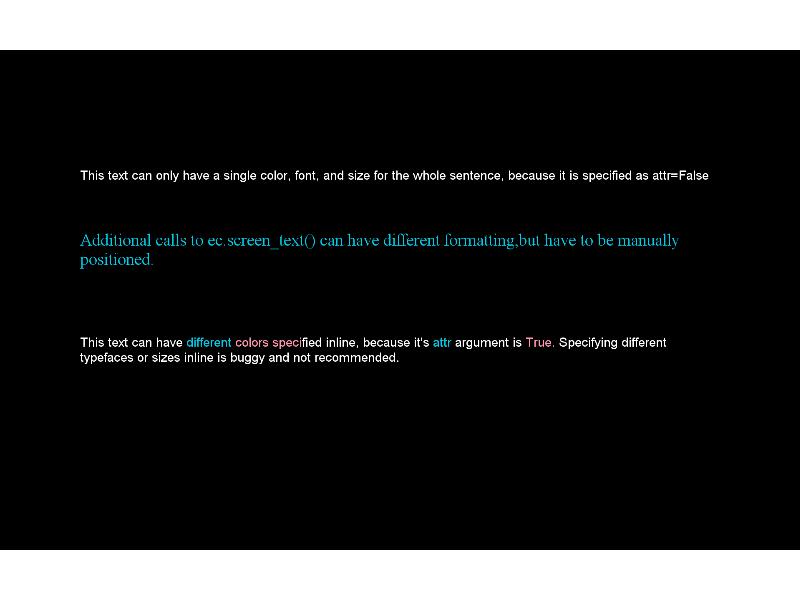

This example demonstrates differences between the Text and AttrText classes.
Script output:
2015-05-18 11:20:42,556 - INFO - Expyfun: Setting up Pyglet audio
2015-05-18 11:20:42,599 - INFO - Expyfun: Setting up screen
2015-05-18 11:20:42,826 - EXP - Expyfun: Set screen visibility True
2015-05-18 11:20:42,843 - INFO - Expyfun: Initializing dummy triggering mode
2015-05-18 11:20:42,915 - INFO - Expyfun: Initialization complete
2015-05-18 11:20:42,915 - EXP - Expyfun: Subject: foo
2015-05-18 11:20:42,915 - EXP - Expyfun: Session: 001
2015-05-18 11:20:44,149 - EXP - Expyfun: Audio stopped and reset.
Python source code: formatted_text_demo.py
# Author: Dan McCloy <drmccloy@uw.edu>
#
# License: BSD (3-clause)
import matplotlib.pyplot as plt
from expyfun import ExperimentController, analyze
from expyfun.visual import _convert_color
print(__doc__)
# Colors
blue = _convert_color('#00CEE9')
pink = _convert_color('#FF97AF')
white = (255, 255, 255, 255)
# Text
one = ('This text can only have a single color, font, and size for the whole '
'sentence, because it is specified as attr=False')
two = ('Additional calls to ec.screen_text() can have different formatting,'
'but have to be manually positioned.')
thr = ('This text can have {{color {0}}}different {{color {1}}}colors '
'speci{{color {2}}}fied inline, because it\'s {{color {0}}}attr '
'{{color {2}}}argument is {{color {1}}}True. {{color {2}}}'
'Specifying different typefaces or sizes inline is buggy and '
'not recommended.').format(blue, pink, white)
fou = 'Press any key to change all the text to pink using .set_color().'
fiv = 'Press any key to quit.'
with ExperimentController('textDemo', participant='foo', session='001',
output_dir=None) as ec:
ec.wait_secs(0.1) # without this, first flip doesn't show on some systems
txt_one = ec.screen_text(one, pos=[0, 0.5], attr=False)
txt_two = ec.screen_text(two, pos=[0, 0.2], font_name='Times New Roman',
font_size=32, color='#00CEE9')
txt_thr = ec.screen_text(thr, pos=[0, -0.2])
screenshot = ec.screenshot()
ec.screen_prompt(fou, pos=[0, -0.5])
for txt in (txt_one, txt_two, txt_thr):
txt.set_color('#FF97AF')
txt.draw()
ec.screen_prompt(fiv, pos=[0, -0.5], color='#FF97AF')
plt.ion()
analyze.plot_screen(screenshot)
Total running time of the example: 1 seconds